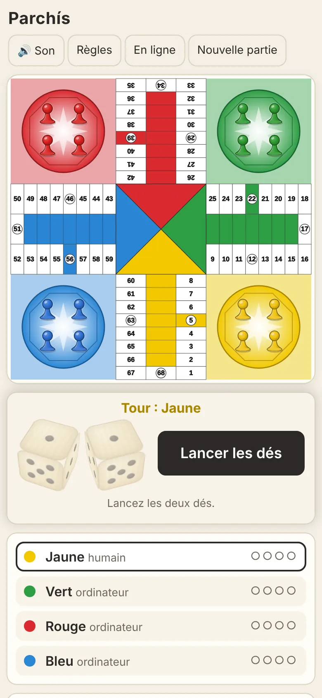
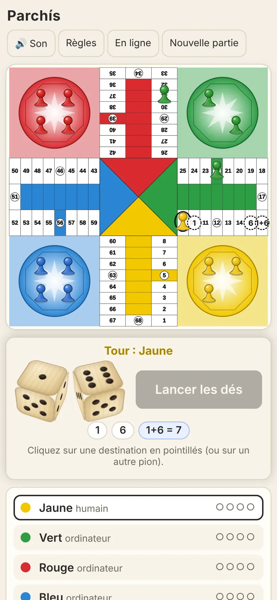

Le jeu
Le Parchís à quatre joueurs et deux dés, à jouer directement dans la page, sans rien installer. Pour chaque coin du plateau, choisissez un joueur humain ou l'ordinateur (facile, normal ou difficile). Les règles de cette version sont à portée de clic : pions sortis avec un 5, barrières, doubles qui font rejouer, pions mangés qui rapportent 20 cases.
Aperçu


Ce que vous y trouverez
- Humains et ordinateur, au choix pour chaque coin
- 3 niveaux d'ordinateur
- Règles consultables pendant la partie
- Journal des coups et classement final
- Sons activables ou coupables
En détail
- Type
- Jeu dans le navigateur
- Installation
- Aucune
- Mise en ligne
- 13 novembre 2026
Catégorie : Jeux · Gratuit · Sans publicité
Ce qu'il faut savoir
- Le jeu s'exécute dans votre navigateur. Il peut enregistrer des réglages et la partie en cours dans le stockage de votre navigateur.
- Aucun compte n'est nécessaire.